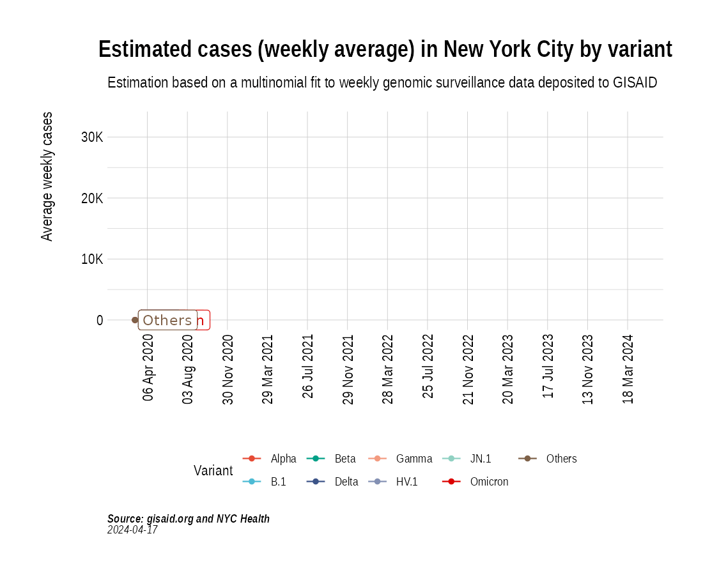

Animation of projected weekly cases - New York City
Source:vignettes/VariantAnimation-NYC.Rmd
VariantAnimation-NYC.Rmd
suppressPackageStartupMessages({
library(covmuller)
library(covid19nytimes)
library(tidyverse)
})
theme_set(CovmullerTheme())Get variants data for NY state
counties <- c("New York", "New York City", "New York County", "Queens County", "Bronx County", "Bronx", "Brooklyn", "Manhattan", "Queens", "Richmond County")
# The Bronx is Bronx County (ANSI / FIPS 36005)
# Brooklyn is Kings County (ANSI / FIPS 36047)
# Manhattan is New York County (ANSI / FIPS 36061)
# Queens is Queens County (ANSI / FIPS 36081)
# Staten Island is Richmond County (ANSI / FIPS 36085)
fips.list <- c(36005, 36047, 36061, 36081, 36085)
gisaid_metadata <- qs::qread("~/github/2021_Covid19_surveillance/data/all_metadata/metadata_tsv_2022_06_25.qs")
gisaid_usa <- gisaid_metadata %>%
filter(Country == "USA") %>%
filter(Host == "Human")
# format metadata
gisaid_usa <- FormatGISAIDMetadata(gisaid_usa)
gisaid_usa <- gisaid_usa %>%
arrange(State, MonthYearCollected) %>%
filter(pangolin_lineage != "Unknown")
gisaid_NY <- gisaid_usa %>% filter(State == "New York")
gisaid_NYC <- gisaid_NY %>% filter(District %in% counties)
vocs <- GetVOCs()
omicron <- vocs[["omicron"]]
vocs[["omicron"]] <- NULL
vocs[["lambda"]] <- NULL
vocs[["beta"]] <- NULL
vocs[["gamma"]] <- NULL
custom_voc_mapping <- list(
`BA.1.1` = "BA.1.1",
`BA.1` = "BA.1",
`BA.2` = "BA.2",
`BA.2.1` = "BA.2.1",
`BA.2.9` = "BA.2.9",
`BA.1.17.2` = "BA.1.17.2",
`BA.2.10` = "BA.2.10",
`BA.2.10.1` = "BA.2.10.1",
`BA.2.12` = "BA.2.12",
`BA.2.12.1` = "BA.2.12.1",
`BA.3` = "BA.3",
`BA.4` = "BA.4",
`BA.5` = "BA.5"
)
gisaid_NYC <- gisaid_NYC %>% filter(pangolin_lineage != "None")
gisaid_NYC <- CollapseLineageToVOCs(
variant_df = gisaid_NYC,
vocs = vocs,
custom_voc_mapping = custom_voc_mapping,
summarize = FALSE
)Get weekly cases for New York
all_county_cases <- refresh_covid19nytimes_counties()
confirmed <- all_county_cases %>%
filter(location == "New York City,New York") %>%
filter(data_type == "cases_total") %>%
arrange(date)
confirmed$daily_cases <- c(confirmed$value[1], diff(confirmed$value))
confirmed$WeekYear <- tsibble::yearweek(confirmed$date)
confirmed$MonthYear <- GetMonthYear(confirmed$date)
confirmed_subset_dateweekwise_long <- confirmed %>%
group_by(WeekYear) %>%
summarise(n = ceiling(mean(daily_cases, na.rm=T))) %>%
arrange(WeekYear) %>%
rename(WeekYearCollected = WeekYear)
gisaid_NYC_weekwise <- SummarizeVariantsWeekwise(gisaid_NYC)Project weekly cases to variant prevalence data from GISAID
voc_to_keep <- gisaid_NYC_weekwise %>%
group_by(lineage_collapsed) %>%
summarise(n_sum = sum(n)) %>%
filter(n_sum > 50) %>%
pull(lineage_collapsed) %>%
unique()
gisaid_NYC_weekwise <- gisaid_NYC_weekwise %>% filter(lineage_collapsed %in% voc_to_keep)
newyork_cases_pred_prob_sel_long <- FitMultinomWeekly(gisaid_NYC_weekwise, confirmed_subset_dateweekwise_long)## # weights: 68 (48 variable)
## initial value 290903.013314
## iter 10 value 169433.369634
## iter 20 value 110782.940188
## iter 30 value 97363.721785
## iter 40 value 84953.121217
## iter 50 value 77678.287506
## iter 60 value 75615.315457
## iter 70 value 75182.495500
## iter 80 value 75116.447014
## iter 90 value 74962.987904
## iter 100 value 74884.111453
## iter 110 value 74877.560114
## iter 120 value 74838.823516
## iter 130 value 74788.180027
## iter 140 value 74768.299792
## iter 150 value 74759.328565
## iter 160 value 74666.747980
## iter 170 value 74358.614982
## iter 180 value 74326.364420
## iter 190 value 74242.225879
## iter 200 value 74238.398321
## iter 210 value 74237.715709
## iter 220 value 74236.637717
## iter 230 value 74213.674503
## iter 240 value 74155.009330
## iter 250 value 74146.075138
## iter 260 value 74110.858277
## iter 270 value 74071.916701
## iter 280 value 74064.330486
## iter 290 value 74038.369313
## iter 300 value 74027.845203
## iter 310 value 74026.856838
## iter 320 value 74021.436030
## iter 330 value 74019.241825
## iter 340 value 74008.735157
## iter 350 value 74001.275360
## iter 360 value 73987.705362
## iter 370 value 73971.305200
## iter 380 value 73963.994086
## iter 390 value 73919.153263
## iter 400 value 73916.239898
## iter 410 value 73913.933456
## iter 420 value 73910.007307
## iter 430 value 73907.600244
## iter 440 value 73903.983071
## iter 450 value 73902.034351
## iter 460 value 73900.476471
## iter 470 value 73899.419948
## iter 480 value 73895.633423
## iter 490 value 73893.625804
## final value 73893.613669
## converged
the_anim <- PlotVariantPrevalenceAnimated(newyork_cases_pred_prob_sel_long, title = "Estimated cases (weekly average) in New York City by variant", caption = "**Source: gisaid.org and covid19nytimes<br>**", date_breaks = "14 days")
gganimate::anim_save(filename = here::here("docs/articles/NYC_animated.gif"), animation = the_anim)
Look at cases after October, 2021 only:
confirmed_subset_dateweekwise_long <- confirmed %>%
filter(MonthYear > "Oct 2021") %>%
group_by(WeekYear) %>%
summarise(n = ceiling(mean(daily_cases, na.rm=T))) %>%
arrange(WeekYear) %>%
rename(WeekYearCollected = WeekYear)
gisaid_NYC_subset <- gisaid_NYC %>% filter(MonthYearCollected > "Oct 2021")
gisaid_weekwise <- SummarizeVariantsWeekwise(gisaid_NYC_subset)
voc_to_keep <- gisaid_weekwise %>%
group_by(lineage_collapsed) %>%
summarise(n_sum = sum(n)) %>%
filter(n_sum > 50) %>%
pull(lineage_collapsed) %>%
unique()
gisaid_weekwise <- gisaid_weekwise %>% filter(lineage_collapsed %in% voc_to_keep)
cases_pred_prob_sel_long <- FitMultinomWeekly(gisaid_weekwise, confirmed_subset_dateweekwise_long)## # weights: 48 (33 variable)
## initial value 145180.671014
## iter 10 value 70005.150004
## iter 20 value 57439.632082
## iter 30 value 48446.287190
## iter 40 value 45656.902959
## iter 50 value 45532.926112
## iter 60 value 45507.296845
## iter 70 value 45499.615110
## iter 80 value 45498.690670
## iter 90 value 45497.677656
## iter 100 value 45496.570991
## iter 110 value 45495.042642
## iter 120 value 45494.796914
## iter 130 value 45493.939154
## iter 130 value 45493.938803
## iter 130 value 45493.938803
## final value 45493.938803
## converged
the_anim <- PlotVariantPrevalenceAnimated(cases_pred_prob_sel_long, title = "Estimated cases (weekly average) in New York City by variant", caption = "**Source: gisaid.org and covid19nytimes<br>**")
gganimate::anim_save(filename = here::here("docs/articles/NYC_animated_2021.gif"), animation = the_anim)
Look at cases after Jan, 2022:
confirmed_subset_dateweekwise_long <- confirmed %>%
filter(MonthYear >= "Jan 2022") %>%
group_by(WeekYear) %>%
summarise(n = ceiling(mean(daily_cases, na.rm=T))) %>%
arrange(WeekYear) %>%
rename(WeekYearCollected = WeekYear)
gisaid_NYC_subset <- gisaid_NYC %>% filter(MonthYearCollected >= "Jan 2022")
gisaid_weekwise <- SummarizeVariantsWeekwise(gisaid_NYC_subset)
voc_to_keep <- gisaid_weekwise %>%
group_by(lineage_collapsed) %>%
summarise(n_sum = sum(n)) %>%
filter(n_sum > 50) %>%
pull(lineage_collapsed) %>%
unique()
gisaid_weekwise <- gisaid_weekwise %>% filter(lineage_collapsed %in% voc_to_keep)
cases_pred_prob_sel_long <- FitMultinomWeekly(gisaid_weekwise, confirmed_subset_dateweekwise_long)## # weights: 48 (33 variable)
## initial value 110702.591248
## iter 10 value 53345.388945
## iter 20 value 46276.525288
## iter 30 value 40581.397171
## iter 40 value 39340.329591
## iter 50 value 39095.890153
## iter 60 value 39065.343711
## iter 70 value 39044.985630
## iter 80 value 39044.178400
## iter 90 value 39041.401523
## iter 100 value 39026.675138
## iter 110 value 39022.966817
## iter 120 value 39021.732937
## iter 130 value 39021.656042
## final value 39021.655263
## converged
the_anim <- PlotVariantPrevalenceAnimated(cases_pred_prob_sel_long, title = "Estimated cases (weekly average) in New York City by variant", caption = "**Source: gisaid.org and covid19nytimes<br>**")
gganimate::anim_save(filename = here::here("docs/articles/NYC_animated_2022.gif"), animation = the_anim)